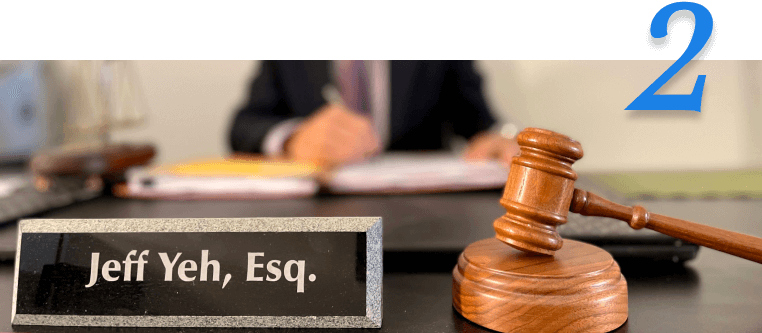
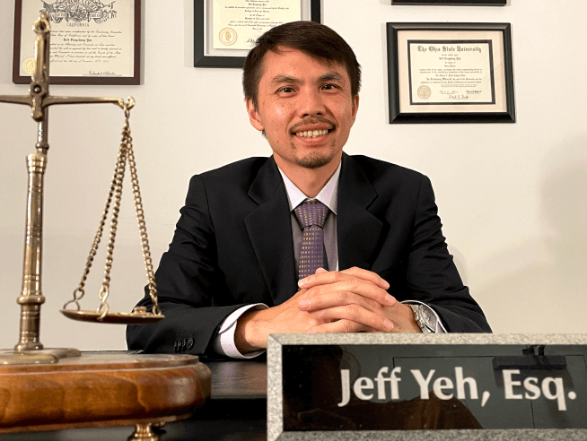
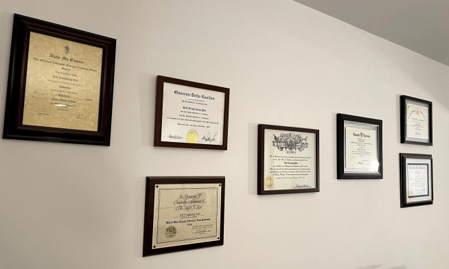
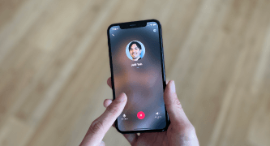
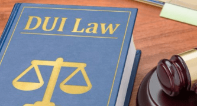

DUI専門弁護士ジェフ・ヨウ
までお気軽にご相談ください
までお気軽にご相談ください


DUI (ドラッグ・飲酒運転)で
お悩みの方へ
お悩みの方へ
このようなことで悩んでいませんか？
- DUIで逮捕され、 VISAや仕事への影響が心配
- 生活には車が必要！ 運転免許証を取りもどしたい
- 過去に有罪となった 前科の記録を消したい
- 弁護士に依頼するべき事案なのか 判断がつかない
－ reason －
ジェフ・ヨウ弁護士に依頼する
つのメリット
つのメリット
免許返却、減額、無罪主張
が可能になります。
ジェフ・ヨウ弁護士は 2000件以上のDUI弁護の経験から、それぞれの裁判所の特色を熟知しております。最適な司法取引や裁判の手段をとることにより、免許返却、減刑/減額、無罪主張への道筋ができます。
ジェフ・ヨウ弁護士
本人が対応いたします。
他社では、新人が担当したり、途中で担当が代わることが多くあります。当事務所では相談対応から出廷まで 一貫して、経験豊富なジェフ・ヨウ弁護士本人が全てのケースを精査し、弁護をしております。

連絡窓口は弁護士に一本化しますので、
依頼主様の負担が軽減されます。
弁護士が依頼者の代わりにDMVや裁判所へ行き、検察官や裁判官と取引をします。依頼者が直接出廷する機会は必要最低限で、受け答えの仕方についても弁護士が事前にアドバイスをするため、安心ができます。
明瞭で良心的な料金
をご提示いたします。
他社では裁判所とDMVでは別料金になっていたり、出廷毎に追加料金が発生する事がありますが、当事務所では裁判所・DMV合わせた、解決までのトータルの料金を提示致します。(陪審員裁判のみ追加料金あり)
－ The DUI Specialist Jeff Yeh －
ジェフ・ヨウ弁護士について

学歴
2002 ヴァンダービルト大学 経済学士 B.A.
Cum Laude
2005 オハイオ州立大学 法務博士 J.D.
2015 Foreign Language Honor Society (日本語)
Alpha Mu Gamma
Cum Laude
2005 オハイオ州立大学 法務博士 J.D.
2015 Foreign Language Honor Society (日本語)
Alpha Mu Gamma
弁護士資格
The State Bar of California
United States District Court Central District of California
United States District Court Central District of California
好きなもの
テニス アウトドア 読書 寿司
自己紹介
葉峰丞( Jeff Yeh )と申します。台湾で生まれ、16の時にアメリカに移住しました。日本文化に興味を持ち、SMCで日本語を学びました。 英語が母国語ではない方にとって、海外で逮捕され、刑事告発されることの不安や辛さは、とてもよく分かります。
2006年以来、刑事弁護士として交通違反やドラッグ・飲酒運転で告訴された方々の弁護をしてきました。私の経験を生かして日本の方々のお役に立てるよう、全力で取り組んで参ります。
2006年以来、刑事弁護士として交通違反やドラッグ・飲酒運転で告訴された方々の弁護をしてきました。私の経験を生かして日本の方々のお役に立てるよう、全力で取り組んで参ります。

DUI Specialist Jeff Yeh
までお気軽にご相談ください
までお気軽にご相談ください
－ Case －
解決事例
Mさん
20代女性
日本人
留学生
20代女性
日本人
留学生
DUI検問所で逮捕
→ 免許返却、VISA更新
→ 免許返却、VISA更新
学生ビサで滞在中の依頼者様は 飲酒運転チェックポイントにて呼気検査を受けた結果、BAC(血中アルコール濃度)は0.16%でした。検問所に異議を申し立てるために Motion (1538.5)
の審議請求を行い、飲酒運転は却下されました。また、DMVヒアリングでも成功し、免許証が返却されました。その後のVisa更新に影響はありませんでした。
Sさん
50代男性
日本人
駐在員
50代男性
日本人
駐在員
速度超過 & 飲酒運転のケース
→ 飲酒運転告発の却下
→ 飲酒運転告発の却下
依頼者様は時速100マイル以上で走行中、ハイウェイパトロールに車を止められ、 検査を拒否しました。 血液検査令状( Blood test warrant )が出され、BAC は 0.12% でした。 弁護士が陪審員裁判( Jurytrial )をセットしたことにより、飲酒運転は棄却され、 検察官は起訴を取り下げました。
Oさん
30代男性
会社員
30代男性
会社員
検査を拒否したケース
→ 裁判所・DMV両方で勝訴
→ 裁判所・DMV両方で勝訴
依頼者様はすでに飲酒運転の前科があり、 今回、車の中で眠っているところを警察官に職務質問をされました。泥酔状態だったため検査を求められ、すべてのテストを拒否しました。 まずは DMV ヒアリングで勝訴し （2年間の免許停止を回避）、法廷では司法取引により DUI
を却下（再犯者に課せられる懲役を回避）させました。
Nさん
50代女性
郵便局員
50代女性
郵便局員
DUI再犯 & 交通事故のケース
→ 陪審員裁判で無罪放免
→ 陪審員裁判で無罪放免
飲酒運転の有罪歴がある依頼者様が、再び飲酒運転で事故を起こし逮捕されました。 血液検査の結果、BAC は 0.17% でした。 陪審員裁判(トライアル)にて、投票の結果は 7 対 5 となり、判事はすべての告発を棄却しました。
－ About －
ご存知ですか？
DUIで逮捕されると・・・
DUIで逮捕されると・・・
カリフォルニア州では、体内の血中アルコール濃度(BAC)が0.08以上（21歳以下ではBAC 0.05以上）の状態で運転することは違法とされ、酒気帯び運転(DUI: Driving Under
Influence)とみなされます。また、マリファナ、コカイン、ヘロインなどのドラッグを服用して運転することもDUIとされます。カリフォルニア州で飲酒運転は刑法に分類され、有罪になれば、全米犯罪者データベース(NCIC)に登録され、犯罪者としてアメリカ全土で情報が共有されます。DUI逮捕歴を理由に就職時に不採用となったり、ビサが却下されることがあります。このように、DUI有罪はアメリカでの生活に大きく影響するので、逮捕された場合は罪を認めたりせず、DUI専門の弁護士に直ちに相談して下さい。弁護士の中には初めの検察官のオファーを受け入れ(Plead
guilty)、早い段階で結審させてしまう弁護士も多いので注意が必要です。
DUI逮捕後の流れ
何もアクションを起こさなかった場合の具体例をあげます。
- ・30日後に自動的に運転免許証が無効に。
（運転継続許可をもらうためのDMVヒアリングを要求できる期間は 10日間 しかありません。） - ・最大 3年間、運転免許証の失効。
- ・最大数千ドルもの高額な罰金が科せられる。
- ・有罪判決によっては刑務所に入ることになる。
- ・最大 32ヶ月続く高額なアルコールクラスの受講。
- ・最大 3年間、アルコール検知器の設置義務。
- ・軽犯罪(misdemeanor)/重罪(felony)という前科がつく。
警察官に車をとめられたらすべきこと
警官にとめられた時点から運転者の会話・行動がすべて記録され (Police report)、裁判はその記録を基に行われます。 ここでは、交通専門刑事弁護士の観点から、不利にならないような立ち回りを具体的に説明します。
- １. 車両停止命令が出たら車をよせ、車内に待機する。
- ２. 警官には常に礼儀正しく、怪しい動きをせず応じる。 運転免許証等書類を指示されたとおりに提示する。
- ３. 職務質問をされたら “I have right to remain silent. (黙秘権があります。)” “I cannot answer that. (答えられません。)”と伝える。黙秘をすることが重要。
- ４. FSTとPASは拒否する。直線を歩く、ペンを目で追う、といった路上のテスト(FST:Field Sobriety Test)はシラフの状態でも酔っ払いにみえる結果になるつくりになっているため、絶対に断る。また、現場での簡易呼気検査(PAS test)も断る。現場でのテストでは被疑者に拒否権がある。 “I respectfully decline. (謹んでお断りします。)”と礼儀正しく言う。弁解や議論はせず、警官を怒らせないように冷静でいることが大切。
- ５. 警察署への移動後に取調べがはじまり、検査方法を選択する。検査結果は、アルコール摂取量や経過時間によっても変わるので、呼気検査と血液検査のどちらが良いとは一概には言えない。検査数は少ない方が良い。加州では全ての検査を拒否すると追加の罰則があるが、後々の弁護で有利になる場合もある。
- ６. 釈放時には運転免許証が没収され、ピンク色の仮免許証(Temporary driver license “Pink slip”)と出頭命令書 (Citation) が渡される。仮免許証を所持していれば30日間は運転が可能。出頭命令書に記載の裁判日に出廷しないと、逮捕状が出る。ドラッグ・飲酒運転は非常に特殊な分野なので、釈放後は必ずDUI専門の弁護士に相談する。
ビザや永住権への影響
2015年11月以降、DUI逮捕者へビザ取り消し通知が届くようになりました。また、DUI有罪歴がつくと現在お持ちのビザや永住権の再申請、そして将来アメリカへの再入国にも影響を及ぼす可能性がありますので十分注意が必要です。英語が母国語でない被疑者は逮捕の際、発言内容をあいまいにされることも多く、不利な立場に置かれます。そのような状況でも、状況を覆す余地はあります。大切なことはまずは結果がでるまでは出国しないこと、そしてDUI有罪を避けるために最大限の弁護をすることです。
－ Flow －
ご相談ご依頼の流れ
お客様からのご連絡
お電話またはテキスト、LINE、Messenger、メール、フォームからご連絡ください。 ヒアリング後に、合計料金を提示致します。 ビデオミーティングまたはご来所で弁護士との相談をご希望の方には日時を調整致します。

お支払い
キャッシュ、クレジットカード、チェック、 Paypal、Venmoなどに対応しております。
弁護活動
まずは、弁護士と依頼者様の間で綿密に状況の情報共有をさせていただき、弁護士主導でDMVと裁判所のケースを進めていきます。

判決
通常はDMVケースが先に終了し、裁判は状況次第で逮捕後１−５ヶ月頃に終了します。（陪審員裁判ではさらに長期間となることがあります。）判決後の質問にも対応しております。
DUI Specialist Jeff Yeh
までお気軽にご相談ください
までお気軽にご相談ください
－ FAQ －
よくあるご質問
法定制限値をオーバーしました。
この時点で有罪確定ですか？
この時点で有罪確定ですか？
法定制限値を超えているというのは出発点に過ぎません。今までに勝訴した全てのケースで、BACは法定制限値以上でした（もしくは検査拒否）。有罪か否かに関わらず、適切な弁護活動を行えば、懲役刑、免許停止、罰金、執行猶予、アルコールクラス...などの刑を軽減または回避することができます。
弁護士を雇う意味はありますか？
一見、有罪確定にみえるケースでも、様々な論争点をみつけだすことができます。不法拘留、ミランダ権利告知義務違反、アルコール吸収時間、DUI検問所の違法性、、、などの専門的な異議申立てや司法取引をすることで、当事務所では多くのケースで成功しています。良い結果を求めるのであれば、飲酒運転に強い弁護士を雇うことは重要です。
DMVヒアリング申請期限が過ぎてしまいました。免許取得できますか？
はい、可能性はあります。DMVは、特に正当な理由がある場合には、遅れての申請を認めています。例えば、身柄を拘束されたままであったり、10日間のルールが記載されたピンクスリップ（仮免許証）が渡されなかったりする場合です。ただし、10日を過ぎれば過ぎるほど、遅延申請が認められる可能性は低くなります。
調査員に連絡するようにと、法執行機関から手紙が届きました。
このような手紙には絶対に返事をしてはいけません。あなたには黙秘権、つまり捜査官や警察官と話さない権利があります。あなたが何を言っても、それは後であなたに不利になるようにねじ曲げられて使用されることを忘れないでください。要するに、答えても何の得にもなりません。しかし、逮捕後に届く手紙の中には返事をしなければならないものもあります。このような手紙やボイスメールを受け取った場合は、早急に弁護士に相談してください。
飲酒運転で捕まったばかりです。SR-22を提出する必要がありますか？
SR-22（保険証明書）はDUIの有罪判決を受けた後、3年間提出しなければなりません。飲酒運転で検挙された後の最初の仕事は、有罪判決を受けないための方法を考えることです。
－ The Law Office of Jeff Yeh －
事務所紹介

ジェフヨウ法律事務所は、飲酒運転による逮捕、起訴案件を数多く手がけてまいりました。カリフォルニア州全域のDUIケースに対応しており、主にロサンゼルス、リバーサイド、サンバーナーディーノ、ベンチュラ、サンディエゴ、オレンジカウンティでDUI告発をされた人々を守ることを専門としております。豊富な知識と経験でしっかりサポートいたします。日本人スタッフも在籍しております。お気軽に日本語でご相談ください。
ロサンゼルスオフィス
3810 Wilshire Blvd., Suite 1110, Los Angeles, CA 90010
アクセス
メトロ駅 Wilshire / Western から徒歩１分
ウィルターンシアターの向かいのビルです。
無料駐車場がビルに併設してあります。
ウィルターンシアターの向かいのビルです。
無料駐車場がビルに併設してあります。
Eメールアドレス
DuiLawYeh＠gmail.com
－ Review －
お客様の声
"Thank you Jeff" R様より
Jeff Yeh has been such a great help. I can't say thank you enough for helping me drop the DUI charge. I would recommend Jeff to anyone who is looking for a DUI attorney. He is truly the DUI specialist.
"Thank you for helping me with my DUI" P様より
Jeff yeh is a great DUI attorney he is very personable honest aggressive and knows how to work all the angles and the system for your benefit I will recommend Jeff yeh to anybody who needs a good DUI attorney thank you Jeff for all of your help.
"THE DUI SPECIALIST!!" W様より
There is no one else I would rather have had, as my lawyer, than Jeff Yeh. When I was pulled over and arrested for a DUI, I was clueless and lost in the dark. I started talking to friends and researching online to figure out if I should hire a lawyer or go with a public defender. Going through 50+ letters from lawyers and searching on AVVO and other online sources, I narrowed it down to 4 lawyers. I talked with all of them and found that Jeff was most knowledgeable, personal, and affordable. He always went the extra mile and made the whole procedure as painless as possible. I didn't have to miss work to go to court and he even helped out with the DMV hearing. (Some of the other lawyers I talked to tried to charge extra fees) Jeff was able to get my DUI dismissed and I couldn't have had anyone better to represent me in court. I recommend him to anyone who is/was unfortunate enough to be arrested for a DUI.
Great and Knowledgeable DUL Specialist January , 2013 N様より
I was very very happy with Jeff's service. I would recommend him to anyone who is looking for a DUL lawyer. To tell you guys my story, when I got my DUI around Downtown LA, I immediately started a lawyer-hunting in Los Angeles. I first emailed about 15 lawyers that I found online and seemed good. After I got their replies, I went to meet 5 different lawyers. They seemed nice and good but a problem with big law firms is that they hire law students and have them take care of minor cases which happen to be DUI cases. So you meet up with your lawyer and explain about your case but it doesn't really matter because they would just let their interns take care of your DUI case anyway. Well if the price is affordable then maybe it's worth trusting them BUT it's always so expensive.... one of the law firms told me it was going to be at least $9000 and since I was a college student at that time, I didn't have that kind of money at all. I understand that prices vary depending on the case but it was way too expensive. I found Jeff through my friend's recommendation and I am so happy that I did. My DUI got dismissed and after 2 years from the dismiss, he contacted me to see if I needed him to do expungement. He is not only a great lawyer but also great person too! Thanks Jeff!
Jeff Yeh has been such a great help. I can't say thank you enough for helping me drop the DUI charge. I would recommend Jeff to anyone who is looking for a DUI attorney. He is truly the DUI specialist.
"Thank you for helping me with my DUI" P様より
Jeff yeh is a great DUI attorney he is very personable honest aggressive and knows how to work all the angles and the system for your benefit I will recommend Jeff yeh to anybody who needs a good DUI attorney thank you Jeff for all of your help.
"THE DUI SPECIALIST!!" W様より
There is no one else I would rather have had, as my lawyer, than Jeff Yeh. When I was pulled over and arrested for a DUI, I was clueless and lost in the dark. I started talking to friends and researching online to figure out if I should hire a lawyer or go with a public defender. Going through 50+ letters from lawyers and searching on AVVO and other online sources, I narrowed it down to 4 lawyers. I talked with all of them and found that Jeff was most knowledgeable, personal, and affordable. He always went the extra mile and made the whole procedure as painless as possible. I didn't have to miss work to go to court and he even helped out with the DMV hearing. (Some of the other lawyers I talked to tried to charge extra fees) Jeff was able to get my DUI dismissed and I couldn't have had anyone better to represent me in court. I recommend him to anyone who is/was unfortunate enough to be arrested for a DUI.
Great and Knowledgeable DUL Specialist January , 2013 N様より
I was very very happy with Jeff's service. I would recommend him to anyone who is looking for a DUL lawyer. To tell you guys my story, when I got my DUI around Downtown LA, I immediately started a lawyer-hunting in Los Angeles. I first emailed about 15 lawyers that I found online and seemed good. After I got their replies, I went to meet 5 different lawyers. They seemed nice and good but a problem with big law firms is that they hire law students and have them take care of minor cases which happen to be DUI cases. So you meet up with your lawyer and explain about your case but it doesn't really matter because they would just let their interns take care of your DUI case anyway. Well if the price is affordable then maybe it's worth trusting them BUT it's always so expensive.... one of the law firms told me it was going to be at least $9000 and since I was a college student at that time, I didn't have that kind of money at all. I understand that prices vary depending on the case but it was way too expensive. I found Jeff through my friend's recommendation and I am so happy that I did. My DUI got dismissed and after 2 years from the dismiss, he contacted me to see if I needed him to do expungement. He is not only a great lawyer but also great person too! Thanks Jeff!
－ Contact －
お問い合わせ
必須お名前
受けた検査